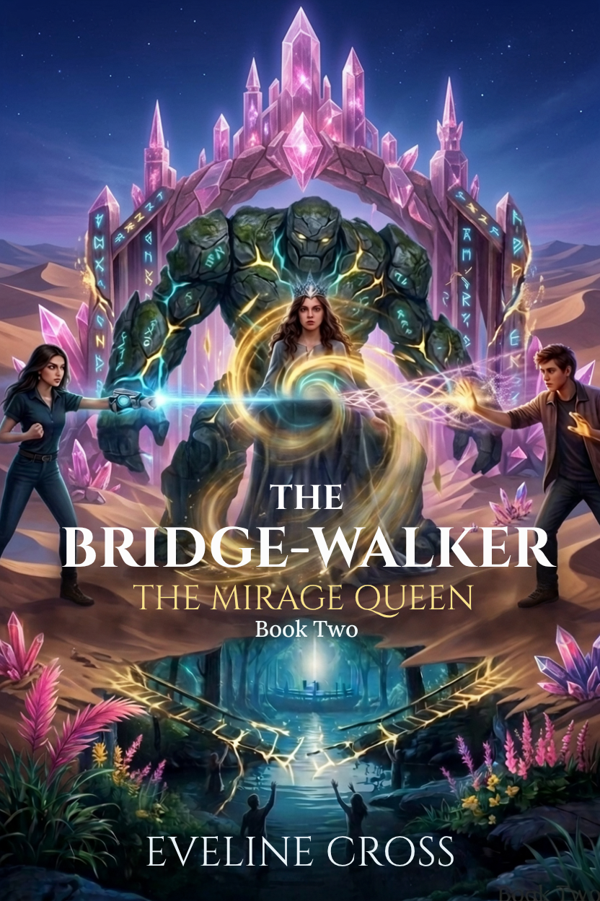

The Trilogy
Three doors, one living gateway
A complete three-book arc. Book One opens the door, Book Two pays the price of power, and Book Three brings everyone home — or doesn’t. Read in order; the cost compounds.

The Accidental Nexus
Lina Rivers becomes a living gateway between worlds, and every door she opens costs her another piece of her memory. With a found family of misfit geniuses, she uncovers a hidden war — and learns that being the key to everything makes you the thing everyone wants to control.

The Mirage Queen
Awakened as the living Nexus and treated like a bomb that hasn’t gone off, Lina is offered the one thing no one else will give her — relief — and crowns herself the Mirage Queen to become uncageable. The rescue her family is racing to attempt is exactly what the enemy planned.
The Convergence
Two worlds, one living gateway, and a family racing to reach Lina before she becomes something no one can bring home. The cost of power, the lure of relief, and the meaning of family all come due at once — and the ending turns on a single open hand.